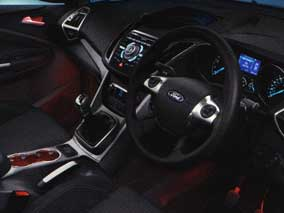

| Dual-zone Electronic Automatic Temperture Control (DEATC) | Auto-dimming rear-view mirror | Ford Power Starter Button |
| (Standard) | (Standard) | (Standard) |
| Sony DAB radio/CD audio system | Ambient interior lighting | Automatic headlights and auto-wipers |
| (Standard) | (Standard) | (Standard) |
|  |